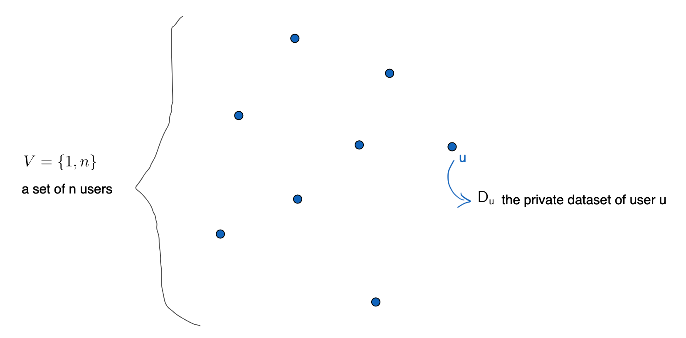
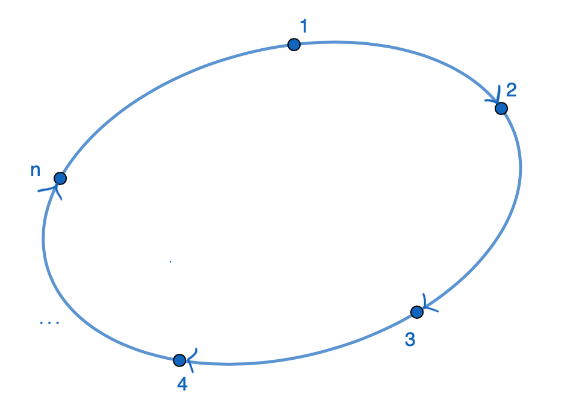
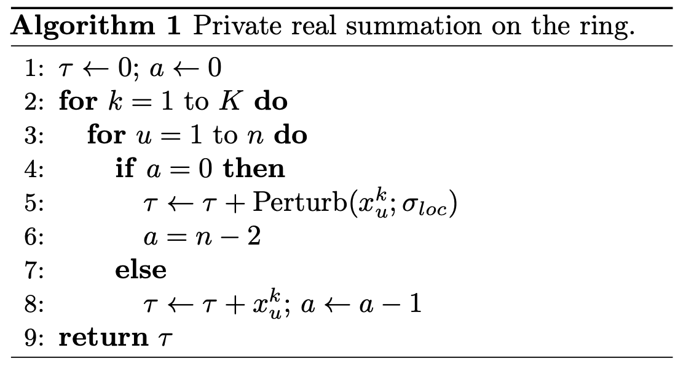
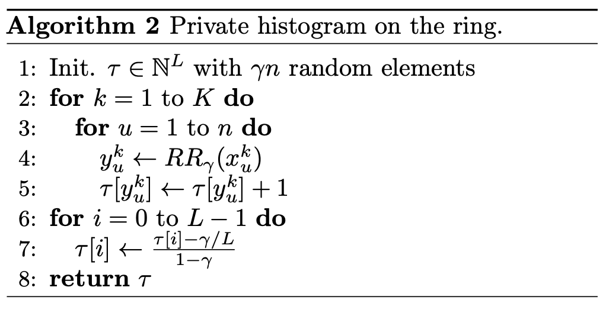
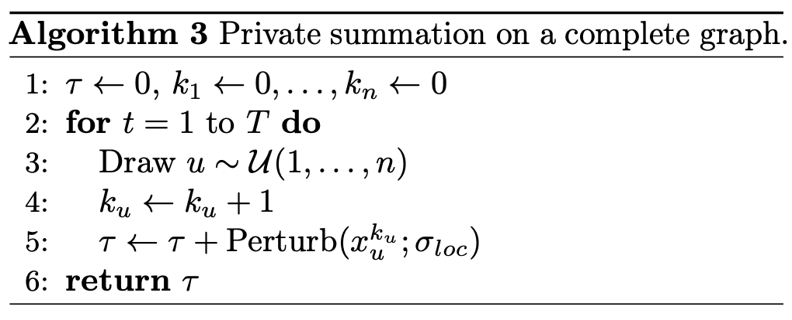
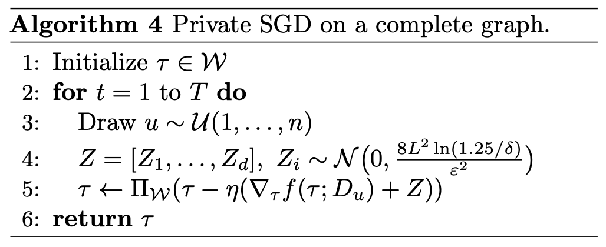
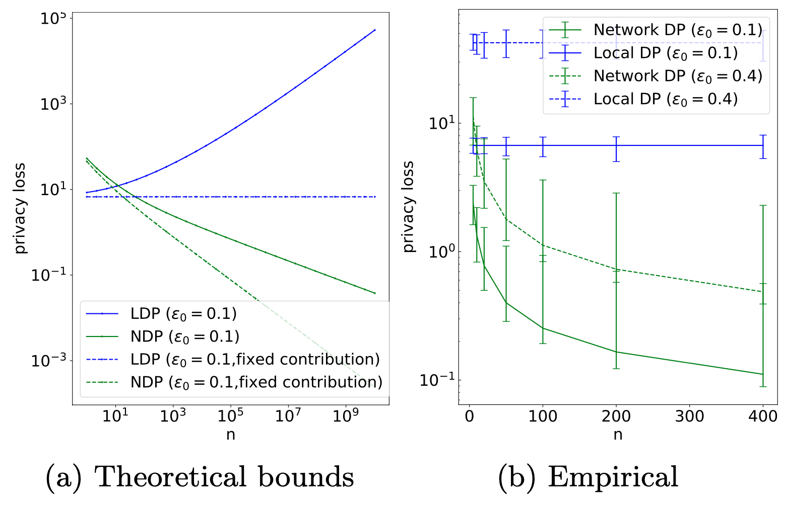
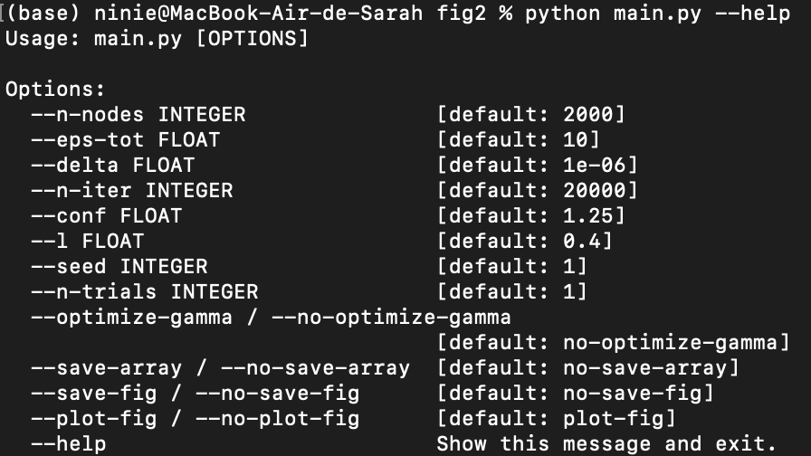
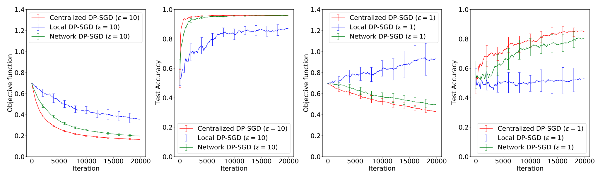

Privacy Amplification by Decentralization
Privacy Amplification by Decentralization
Author: Sarah ABBANA BENNANI
Table of Contents
- Introduction - the challenge of data privacy
- Theoretical Aspects on Differential Privacy
- First Case: walk on a ring
- Generalisation: walk on a complete graph
- Experiments
- Perspectives
This is a blogpost about the paper Privacy Amplification by Decentralization, published by E. Cyffers et al. in 2022 and available here.
Introduction - the challenge of data privacy
In recent years, the concept of privacy has gained significant attention due to the proliferation of data collection practices and the need to safeguard individuals’ personal information.
There has been a notable shift towards implementing regulations to govern the gathering of data from individuals, underscoring the pressing demand for privacy measures that are not only effective and robust against potential attacks but also transparent and firmly grounded in logic and mathematics.
A current way to define privacy in the context of data sharing is the promess of the dataholder (the person or entity managing the data) towards the users, that there will be no consequences (positive or negative) induced by their consent to sharing their data.
Let us take a small example to illustrate and to understand the underlying complexity of this notion: we consider an entity that desires to conduct a study on the correlation between smoking and cancer risks.
Should a smoker participate, and the study concludes that smoking indeed increases the likelihood of cancer, the repercussions for the smoker could vary.
-
Some negative impacts: insurance premiums could increase
-
Some positive impacts: motivation to quit smoking
We could therefore think that privacy in this case is broken for the participant, however there is a subtility which is one of the keys to capture the nuance between the privacy of an individiual and that of a group. In this case, crucially, we cannot say privacy is breached, as the participation of the smoker should not alter the study’s outcome, i.e. from a probabilistic standpoint, whether or not the individual participates in the study will not significantly change the likelihood of the conclusion of the study.
Formally, and to introduce some probabilities, which we will delve into further later on:
$\mathbb{P}(result=smoking\ bad | individual\ participates) \approx \mathbb{P}(result=smoking\ bad | individual\ does\ not\ participate) $
Privacy has become a real challenge for all parties, as it is necesssary to find a balance between the utility of the data and the privacy guarantees of the users.
- For the dataholder, the aim is to retain the wealth of data to derive useful insights. They must be able to analyse enough of the data to learn about the population without revealing any individual-specific information.
- For the users, they must believe that their data will be protected and that they will not be hurt by giving them. This trust in the dataholder is important to incite the users to give their data.
In this paper, the aim of the authors, E. Cyffers and A. Bellet, was to show some algorithms and methods that allow to improve the privacy-utility trade-offs and therefore reinforce privacy around the data, while keeping scalability.
The proposed algorithms are based on full decentralization, and newtork differential privacy (DP), two notions that we will explain right below.
Theoretical Aspects on Differential Privacy
Mathematical context
We must introduce some key mathematical definitions to understand the problem we want to tackle.
Users space
We consider a set of $n$ users (e.g. a population responding to a survey), each holding a private dataset that we note $D_u$ (e.g. their answer to the questions of the survey).

Neighboring relation
We write $D=D_1 \cup \cdots \cup D_n$ the union of all users datasets.
We can define a neighboring relation over these datasets, that we call user-level Differential Privacy:
For two datasets $D$ and $D’$ of the same size, we denote by $D \sim_u D^{\prime}$ the fact that $D$ and $D’$ are neighbors, in the sense that they only differ on user $u$’s data.
For example, $D$ and $D’$ could be two datasets corresponding to the answers of a survey from 10 users. For nine of these users the answers are the same for the two datasets. But for one user $u$, the answers are different (e.g. in $D$ user $u$ smokes, in $D’$ he doesn’t smoke).
The inuition between this definition relatively to privacy is that compared to traditional differential privacy, which considers changes in individual data points, user-level DP provides stronger privacy guarantees. By hiding the influence of an entire user’s dataset, rather than just a single data point, it ensures that individual user contributions are not discernible, thus enhancing overall privacy protection.
Decentralization
We will set ourselves in a fully decentralized system. In this configuration, each user only communicates with a small number of other users at each step, and there is no central coordinator processing all the data. The aim of this setting is to limit the concentration of sensitive information in one place, reducing the risk of data breaches and unauthorized access.
The users and their communications are represented by a network (directed or undirected) graph $G = (V, E)$, where $V$ is the users ensemble defined above, and $E$ is the set of edges: $(u, v) \in E$ indicates that user $u$ can send messages to user $v$.
In this case, a randomised decentralized algorithm is defined as a mapping that from a dataset, returns that transcript of all messages exchanges between the users over the network. In formal terms, $A: D \longmapsto {(u, m, v): u \text{ sent message with content } m \text{ to } v }$.
The aim of decentralization in this representation, is to give users the fewer information possible, i.e. only the messages they are involved in, and not the full transcript $A(D)$.
We introduce this view of a user $u$: $\mathcal{O}_u(\mathcal{A}(D))=\left(\left(v, m, v^{\prime}\right) \in \mathcal{A}(D): v=u \text { or } v^{\prime}=u\right)$
Differential Privacy
We will take a step back on this representation to introduce in a more global way the mathematical notion of Differential Privacy (DP).
Let us consider a randomised algorithm $M$. $M$ is said to be “$\alpha$-differentially private” if, for any event $A$:
$$\mathbb{P}[M(D)\in A]\leq e^{\alpha} \cdot \mathbb{P}[M(D’)\in A]$$
where $D$ and $D’$ are two datasets differing on a single element.
To make this more intuitive, a randomized algorithm is an algorithm that employs a degree of randomness as part of its logic. The algorithm must treat the data so that the output is not overly depend on the data of any one individual.
Let’s consider the event “Smoking is correlated to cancer”, and $D$ and $D’$ differing on the user $u$’s data, whether or not that individual that has cancer smokes or not.
We can rewrite the definition as: $\frac{\mathbb{P}\left[M\left(D\right) \in A\right]}{\mathbb{P}\left[M\left(D’\right) \in A\right]} \leq e^{\alpha}$
We can see that $\alpha$, the privacy factor, represents the lost of privacy:
-
When $\alpha \rightarrow 0$: the two probabilities are equal, meaning that whether user $u$ participates or not to the survey, the result is the same, i.e. privacy is at its maximum, but the statistical utility is null.
-
When $\alpha \rightarrow+\infty$: there are no constraints on the probabilities and therefore no constraints on privacy.
Thus it is the intermediate case for $\alpha$ that is the most interesting and that can allow a good trade-off between privacy and utility.
Network Differential Privacy
In this paper, the definition used for Differential Privacy is a bit different, actually relaxed as the algorithm is decentralized.
An algorithm $A$ is said to be $(\varepsilon, \delta)$-network Differentially Private if for all pairs of distinct user $u, v \in V$ and all pairs of neighboring datasets $D \sim_u D^{\prime}$, we have:
$$ \mathbb{P}\left(\mathcal{O}_v(\mathcal{A}(D))\right) \leq e^{\varepsilon} \mathbb{P}\left(\mathcal{O}_v\left(\mathcal{A}\left(D^{\prime}\right)\right)\right)+\delta $$
We can interpret this as the need that the information gathered by $v$ during the execution of $A$ must not depend too much on $u$’s data.
Furthermore, the definition can be extended in the case of collusion between the users, i.e. if multiple individuals collaborate or conspire to exploit or manipulate a system or process for their collective benefit.
An algorithm $A$ is $(c, \varepsilon, \delta)$-network DP if for each user $u$, all subsets $W \subset V$ such that $\left|W\right| \leq c$, and all pairs of neighboring datasets $D \sim_u D^{\prime}$, we have:
$$ \mathbb{P}\left(\mathcal{O}_W(\mathcal{A}(D))\right) \leq e^{\varepsilon} \mathbb{P}\left(\mathcal{O}_W\left(\mathcal{A}\left(D^{\prime}\right)\right)\right)+\delta $$
Here $\mathcal{O}_W$ represents the aggregated information of the collusion: $\mathcal{O}_W = \cup _{w \in W} \mathcal{O}_w$.
Decentralized computation model
The algorithms studied in this paper are meant to perform computations by using a token that will walk through the nodes of the network graph. The purpose of the token is to facilitate sequential updates across the nodes in the network. As it traverses through the nodes following the edges of the graph, it carries information and updates its states based on local computations performed at each node from the values obtainable from the corresponding user.
If the token $\tau$ resides at some node $u$, it will be:
-
Updated by: $\tau \leftarrow \tau+x_u^k, \quad$ with $x_u^k=g^k\left(\tau ; D_u\right)$
-
Sent to another user $v$ with $(u, v) \in E$
Here, $x_u^k$ denotes the contribution of user $u$ to the computation. It depends both on the current value of $\tau$ and on the number of times $k$ that the token visited $u$ so far.
This model of computation allows to optimize the combination of local costs within the network, which is useful for tasks like training machine learning models. The token holds the model’s parameters and is updated based on the local information at each point it visits. This decentralized approach can also be used to calculate summaries of data contributed by users, such as finding totals or averages.
The idea of the following parts is to study different graph achitectures and computation protocols, based on the formalization explained above, to achieve good utility-privacy trade-offs
First case: walk on a ring
We consider here a graph architecture of a directed ring, i.e. $E = {(u, u+1)}_{u=1}^{n-1} \cup{(n, 1)}$, meaning that the token, starting from the first user, will travel around the ring multiple times, and more precisely go through every user $K$ times.

This is a simple case that is meant to show how we can achieve suitable results without relying on a centralised agregator.
We are going to explain how this architecture can perform for privacy guarantees on the task of Real Summation, and then on Discrete Histogram Computation.
Real Summation
Each user will contribute a value during each round of the token’s journey. The task of real summation aims to estimate the sum of all contributions made by users.
For example, we can imagine a scenario where users of a health monitoring app report their daily step counts. The app’s goal is to calculate the total number of steps taken by all users, without revealing individual step counts. Each user’s daily step count is considered a contribution, and the app needs to aggregate these contributions while preserving user privacy.
Indeed to preserve privacy in this case, a common method is to add random noise, an abstract perturbation mechanism, which usually consist in a standard Gaussian or Laplace deviation to the contribution. We won’t go into further details on the perturbation, but we assume that it satisfies traditional local differntial privacy (LDP).
Furthermore, here the decentralized protocol proposes to add this noise only once every few hops of the token, and in fact every $n-1$ hops of the token as shown in the algorithm below:

They prove the following theorem:
Theorem: Let $\varepsilon, \delta>0$. Algorithm 1 outputs an unbiased estimate of $\bar{x}$ with standard deviation $\sqrt{\left\lfloor \frac{Kn}{n - 1} \right\rfloor} \sigma_{\text{loc}}$, and is $\sqrt{2K \ln\left(\frac{1}{\delta’}\right)\varepsilon}$ $+ K\epsilon(e^\varepsilon - 1), K\delta + \delta’$-network DP for any $\delta’ > 0$
The Algorithm 1 proposed actually provides a gain on the error of $O\left(\frac{1}{\sqrt{n}}\right)$ compared to a LDP achieving the same privacy guarantees. This means it achieves a similar balance between privacy and utility as a centralized aggregator would, if they itratively aggregated user contributions then perturb the results before sending it to the users, buy here without the need for this centralized party.
Discrete Histogram Computation
Here we focus on another task that is computing histograms over a discrete domain.
With the same example as above, it could be such as counting the frequency of steps in different ranges for a health monitoring app.
Traditional local differential privacy (LDP) methods use L-ary randomized response, where each user submits their true value with probability $1-\gamma$ and a random value with probability $\gamma$. However, in the decentralized approach with a ring network, they propose Algorithm 2. This algorithm randomizes each user’s contribution using L-ary randomized response before adding it to the token, which maintains a partial histogram representing the shuffled contributions, thus enhancing privacy through shuffling, as demonstrated in previous studies.

As for the case of real summation, a theorem proves that to achieve the same privacy in LDP, it would need $\sqrt n$ times more random responses, and when achieving the same utility (meaning to fix $\gamma$), Algorithm 2 provides a gain of privacy of $O\left(\frac{1}{\sqrt{n}}\right)$.
We see that decentralized computation over a ring enables comparable utility to a trusted aggregator by sequentially hiding previous users’ contributions, without relying on a central server or requiring costly multi-party computation protocols.
However this simple topology presents limitations including vulnerability to collusions, which compromises differential privacy guarantees, and inadequacy for extensions to gradient descent due to the lack of privacy amplification between users with fixed positions in the ring.
This is why we shall now consider random walks over a complete graph.
Generalisation: walk on a complete graph
Random walk on a complete graph assumes the token is randommly sent to a user at each step. The walk consists of fixed-length random walks, ensuring that each user’s contributions are random, and their path is concealed, allowing only the messages sent and received to be known by a user.
Real Summation
Algorithm 3 shows the protocol, naturally extended from the ring topology, where each user updates the token with its contribution and a perturbation. The secrecy of the path taken by the token and the aggregations of the contributions between two visits of the token guarantee the network DP property.

Again, a theorem proves that asymptotically, network DP offers a privacy amplification of $O\left(\frac{1}{\sqrt{n}}\right)$ over LDP for the same conditions, which aligns with the privacy-utility trade-off of a trusted aggregtor.
The same analysis can be done for the discrete histogram computation case.
Stochastic Gradient Descent
In this section, we address the challenge of private convex optimization using stochastic gradient descent (SGD). We consider a convex set $(W \subseteq \mathbb{R}^d)$ and a collection of convex functions $(f(\cdot; D_1), \ldots, f(\cdot; D_n))$, each associated with a user, being L-Lipschitz and $(\beta)$-smooth over $(W)$. Our goal is to privately solve the optimization problem to find $(w^*)$ minimizing the average of these functions over $(W)$:
$$w^* \in \arg \min_{w \in \mathcal{W}} \left( F(w):=\frac{1}{n} \sum_{u=1}^n f\left(w ; D_u\right) \right)$$
This equation encapsulates various machine learning tasks, such as ridge and logistic regression, and others. This is significant because it addresses the need for private optimization in machine learning, ensuring that sensitive data remains protected while training models on distributed datasets.
The algorithm below proposes a method to privately approximate $w^*$, where the token represents the current iterate. At each step, the user $u$ holding the token performs a projected noisy gradient step and sends the updated token to a random user. The variance in the Gaussian mechanism of line 4 is deduced from the Lipschitz property of the functions.

A theorem based on the evolution of the privacy loss proves the differential privacy guarantees, and again the results are satisfactory. Compared to traditional local differential privacy methods, we obtain a privacy amplification of $O\left(\frac{\ln n}{\sqrt{n}}\right)$ for a specific number of iterations, with the same level of privacy-utility trade-off.
With a fixed privacy budget and a large number of iteration, the expected error of this algorithm is smaller with this network DP than with LDP.
Compared to the ring case, this random walk approach has better robustness to collusion, as colluding users can be treated as a single node with adjusted transition probabilities, leading to equivalent privacy guarantees as for non-colluding users.
Experiments
To show the efficiency of the privacy amplification methods explained in this article, some experiments have been made on the complete graph, first for the Real Summation task, and then for Machine Learning with Stochastic Gradient Descent (SGD).
The code is available here: Github Link
Real Summation
We reproduced the first experiment from the paper, comparing th analytical bounds of LDP and NDP on the real summation task.
To do so, we only need to run the main_a.py and main_b.py files with python from the fig1 folder to display the corresponding figures (a) and (b). It works, for instance, with Python version 3.8, with the prerequisite of having installed the packages numpy and matplotlib, only taking a few seconds to execute.
It gives the following results:

As we may see from the theoretical bounds, privacy is amplified with network differential privacy over LDP when the numer of users $n$ is greater or equal to 20, with increaingly substancial improvements as $n$ grows.
In practice by making some simulations, the gains are even more significant and even for a smaller number of users, as we see in figure (b).
Machine Learning with SGD
For this second experiment, the task is to train a logistic regression model in this decentralized context.
The setting of the experiment is:
- UCI Housing dataset (binarized version)
- Standardized features and normalized data point (to have unit L2 norm and Lipschitz property of the logistic loss)
- Train/test split of 80% uniformly at random
- Training set split between $n = 2000$ users (each user has a local dataset of size $8$)
The experiment compares three settings for Stochastic Gradient Descent with perturbation:
- Centralized DP-SGD, requiring a trusted curator
- Local DP-SGD, corresponding to Algorithm 4 with LDP method
- Network DP-SGD, corresponding to Algorithm 4 with Network DP method, the one of interest
We must run the main.py file of folder fig2 with Python to display the results.
It is possible to use the command python main.py –help to show the list of parameters that can be tuned to modify the context of the experiment (the default ones are for $\varepsilon = 10$ and $\varepsilon = 1$):

I had some issues to run this program with my settings (same as for the first experiment).
- The typer module was missing therefore I had to install it : pip install typer
- The _intercept_dot function from sklearn.linear_model._logistic couldn’t be found either. By checking the sklearn.linear_model.LogisticRegression (which is the public class corresponding to the import here), this function doesn’t appear. I wanted to change it with the intercept_ attribute but it didn’t fit either. Then by checking the usage of this function in the case, it seemed that it computes a dot product between the model parameters and the input data, taking into account whether an intercept term is included. Therefore I tried to manually code this functionality but unfortunately it didn’t give coherent results compared to the paper.
Here are the original results from the paper:

Here, although the number of contributions per user doesn’t align with the optimal regime for network DP, the observed privacy amplification surpasses theoretical expectations. By numerically determining the minimum noise level required for theoretical proofs, they demonstrated that Network DP-SGD achieves a privacy-utility trade-off comparable to Centralized DP-SGD across various privacy levels, showcasing significant privacy amplification benefits over Local DP-SGD, especially in scenarios with fewer iterations than typically recommended.
Perspectives
The work presented suggests numerous avenues for exploration. Generalizations to diverse graph structures, incorporating dynamic topologies to reinforce resilience against collusion, and investigating decentralized models beyond our current scope are key directions. Exploring the potential of multiple tokens traversing the graph simultaneously and delving into randomized gossip algorithms offer promising avenues for advancing privacy-preserving techniques. Finally, probing the theoretical limits of network DP and exploring scenarios where users trust nearby peers more could provide insights into refining privacy mechanisms.